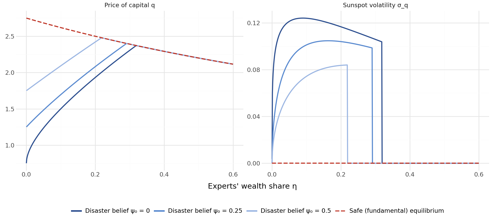

import pandas as pd
import numpy as np
from scipy import stats
from scipy.optimize import minimize
import plotnine as p9
from mizani.formatters import percent_format, comma_format
import warnings
warnings.filterwarnings("ignore")41 Rủi ro đuôi và các sự kiện cực đoan
Về bản chất, tài chính là một lĩnh vực của những giá trị cực đoan. Các đối tượng trọng tâm (ví dụ: định giá tài sản, phân bổ danh mục đầu tư, quy định về vốn, ổn định hệ thống) đều bị chi phối một cách không cân xứng bởi những sự kiện hiếm nhưng nghiêm trọng. Một nhà quản lý danh mục ước lượng đúng kỳ vọng và phương sai của lợi nhuận nhưng bỏ qua khả năng xảy ra một biến động ngày \(-20\%\) thì, theo cách nói của Taleb (2010), là đang “nhặt từng đồng xu ngay trước một chiếc xe lu”. Cuộc khủng hoảng tài chính châu Á năm 1997, khủng hoảng tài chính toàn cầu năm 2008 và cú sụp đổ do COVID-19 năm 2020 đều cho thấy rằng những diễn biến có hệ quả lớn nhất trên thị trường tài chính chính là những diễn biến mà các mô hình Gauss truyền thống gán cho xác suất gần như bằng không.
Chương này xây dựng bộ công cụ thống kê và kinh tế lượng để đo lường, mô hình hóa và chẩn đoán rủi ro đuôi trên thị trường cổ phiếu Việt Nam. Chúng ta tập trung vào ba tầng có liên hệ chặt chẽ với nhau. Thứ nhất, ở cấp độ từng cổ phiếu, chúng ta ước lượng các thước đo rủi ro sụp đổ nhằm nắm bắt tính bất đối xứng và độ dày của đuôi trái trong phân phối lợi nhuận. Thứ hai, ở cấp độ danh mục hoặc cấp độ quy định giám sát, chúng ta triển khai Giá trị chịu rủi ro (Value at Risk, VaR) và Thiếu hụt kỳ vọng (Expected Shortfall, ES) theo nhiều cách ước lượng khác nhau và đánh giá độ chính xác của chúng thông qua kiểm định ngược (backtesting). Thứ ba, ở cấp độ hệ thống, chúng ta áp dụng Lý thuyết giá trị cực trị (Extreme Value Theory, EVT) và các thước đo phụ thuộc đuôi để mô tả hành vi sụp đổ đồng thời giữa các ngành và đánh giá sự lây lan tài chính.
Thị trường Việt Nam là một phòng thí nghiệm đặc biệt phong phú để nghiên cứu các hiện tượng đuôi. Biên độ giá hằng ngày kiểm duyệt một cách cơ học phần đuôi của phân phối lợi nhuận quan sát được, tạo ra rủi ro đuôi tiềm ẩn không thể quan sát trực tiếp mà phải được suy ra. Mức độ tập trung sở hữu nhà nước, thanh khoản mỏng và hành vi bầy đàn của nhà đầu tư cá nhân khuếch đại các động lực sụp đổ. Việc thiếu một thị trường phái sinh phát triển có nghĩa là các công cụ phòng ngừa rủi ro đuôi quen thuộc ở những thị trường phát triển hơn (ví dụ: quyền chọn bán nằm sâu ngoài giá, hoán đổi phương sai) hầu như không có sẵn, khiến việc đo lường chính xác rủi ro đuôi càng trở nên quan trọng đối với quản trị rủi ro.
41.1 Rủi ro sụp đổ trên thị trường cổ phiếu
41.1.1 Vấn đề đuôi trái
Phân phối lợi nhuận của từng cổ phiếu và của các chỉ số thị trường không đối xứng. Bằng chứng qua nhiều thập kỷ, bắt đầu từ Mandelbrot và c.s. (1963) và được hình thức hóa trong bối cảnh định giá tài sản bởi Harvey và Siddique (2000), cho thấy lợi nhuận cổ phiếu có độ lệch âm (tức là các mức lợi nhuận âm lớn xảy ra thường xuyên hơn so với dự báo của mô hình Gauss) và độ nhọn vượt mức (tức là phần đuôi dày hơn phân phối chuẩn ở cả hai phía, nhưng đuôi trái là mối quan tâm kinh tế chính).
Gọi \(r_{i,t}\) là lợi nhuận logarit hằng ngày của cổ phiếu \(i\) vào ngày \(t\). Moment trung tâm bậc ba đã chuẩn hóa (độ lệch) là:
\[ \text{Skew}(r_i) = \frac{E\left[(r_{i,t} - \mu_i)^3\right]}{\sigma_i^3} \tag{41.1}\]
Độ lệch âm hàm ý rằng phân phối có đuôi trái dài hơn hoặc dày hơn so với đuôi phải. Về mặt kinh tế, độ lệch âm có nghĩa là các khoản lỗ lớn có khả năng xảy ra cao hơn các khoản lãi lớn có cùng độ lớn. Moment bậc bốn đã chuẩn hóa (độ nhọn vượt mức) là:
\[ \text{Kurt}(r_i) = \frac{E\left[(r_{i,t} - \mu_i)^4\right]}{\sigma_i^4} - 3 \tag{41.2}\]
Độ nhọn vượt mức dương cho thấy phần đuôi nặng hơn so với phân phối chuẩn. Cả hai moment đều có hàm ý trực tiếp đối với định giá tài sản: Harvey và Siddique (2000) và Kraus và Litzenberger (1976) lập luận rằng nhà đầu tư đòi hỏi được bù đắp khi nắm giữ các tài sản có độ lệch âm, nghĩa là các cổ phiếu dễ sụp đổ nên có lợi nhuận kỳ vọng cao hơn, các yếu tố khác không đổi.
41.1.2 Các thước đo rủi ro sụp đổ
Tài liệu nghiên cứu đã phát triển nhiều thước đo rủi ro sụp đổ riêng cho từng doanh nghiệp. Chúng ta triển khai ba thước đo được sử dụng rộng rãi nhất, theo Chen, Hong, và Stein (2001) và Hutton, Marcus, và Tehranian (2009).
Thước đo 1: Hệ số lệch âm (NCSKEW)
Với mỗi doanh nghiệp \(i\) trong năm tài chính \(y\), tính lợi nhuận tuần đặc thù của doanh nghiệp \(W_{i,\tau}\) là phần dư từ một mô hình thị trường được bổ sung thêm lợi nhuận thị trường dẫn trước và trễ sau để xử lý hiện tượng giao dịch không đồng bộ:
\[ r_{i,t} = \alpha_i + \beta_{1i} r_{m,t-1} + \beta_{2i} r_{m,t} + \beta_{3i} r_{m,t+1} + \varepsilon_{i,t} \tag{41.3}\]
trong đó \(r_{m,t}\) là lợi nhuận thị trường theo trọng số vốn hóa vào ngày \(t\). Lợi nhuận tuần đặc thù của doanh nghiệp là \(W_{i,\tau} = \ln(1 + \sum_{t \in \tau} \hat{\varepsilon}_{i,t})\), trong đó \(\tau\) là chỉ số của các tuần. Khi đó NCSKEW là:
\[ \text{NCSKEW}_{i,y} = -\frac{n(n-1)^{3/2} \sum W_{i,\tau}^3}{(n-1)(n-2)\left(\sum W_{i,\tau}^2\right)^{3/2}} \tag{41.4}\]
trong đó \(n\) là số lợi nhuận tuần đặc thù của doanh nghiệp trong năm. Dấu âm bảo đảm rằng NCSKEW càng cao thì rủi ro sụp đổ càng lớn.
Thước đo 2: Biến động giảm so với tăng (DUVOL)
Chia các lợi nhuận tuần đặc thù của doanh nghiệp thành “tuần giảm” (\(W_{i,\tau} < \bar{W}_i\)) và “tuần tăng” (\(W_{i,\tau} \geq \bar{W}_i\)), trong đó \(\bar{W}_i\) là giá trị trung bình năm. Khi đó:
\[ \text{DUVOL}_{i,y} = \ln\left(\frac{(n_u - 1)\sum_{\text{down}} W_{i,\tau}^2}{(n_d - 1)\sum_{\text{up}} W_{i,\tau}^2}\right) \tag{41.5}\]
trong đó \(n_u\) và \(n_d\) lần lượt là số tuần tăng và số tuần giảm. DUVOL càng cao thì rủi ro sụp đổ càng lớn. Chen, Hong, và Stein (2001) lập luận rằng DUVOL ít nhạy với các giá trị ngoại lai hơn NCSKEW vì không liên quan đến lũy thừa bậc ba của lợi nhuận.
Thước đo 3: Số lần sụp đổ (COUNT)
Định nghĩa một sự kiện sụp đổ là lợi nhuận tuần đặc thù của doanh nghiệp thấp hơn \(k\) độ lệch chuẩn so với phân phối trong năm của chính nó:
\[ \text{CRASH}_{i,\tau} = \mathbb{1}\left(W_{i,\tau} < \bar{W}_i - k \cdot \hat{\sigma}_{W_i}\right) \tag{41.6}\]
Ngưỡng tiêu chuẩn trong tài liệu nghiên cứu là \(k = 3.09\), tương ứng với phần đuôi 0.1% của phân phối chuẩn tắc. Số lần sụp đổ của năm \(y\) là \(\text{COUNT}_{i,y} = \sum_{\tau \in y} \text{CRASH}_{i,\tau}\).
# DataCore.vn API
from datacore import DataCore
dc = DataCore()
# Load daily stock returns and market returns
daily_returns = dc.get_daily_returns(
start_date="2010-01-01",
end_date="2024-12-31"
)
# Market return: value-weighted index
market_returns = dc.get_market_returns(
start_date="2010-01-01",
end_date="2024-12-31",
frequency="daily"
)
# Merge
df = daily_returns.merge(
market_returns[["date", "mkt_ret"]],
on="date",
how="left"
)
print(f"Universe: {df['ticker'].nunique()} firms, "
f"{df['date'].nunique()} trading days")from sklearn.linear_model import LinearRegression
def compute_firm_specific_returns(group):
"""
Estimate firm-specific daily returns from augmented market model
with lead and lag market returns (Chen, Hong, Stein 2001).
"""
g = group.sort_values("date").copy()
g["mkt_lag1"] = g["mkt_ret"].shift(1)
g["mkt_lead1"] = g["mkt_ret"].shift(-1)
g = g.dropna(subset=["ret", "mkt_ret", "mkt_lag1", "mkt_lead1"])
if len(g) < 30:
return pd.DataFrame()
X = g[["mkt_lag1", "mkt_ret", "mkt_lead1"]].values
y = g["ret"].values
model = LinearRegression().fit(X, y)
g["resid"] = y - model.predict(X)
return g[["ticker", "date", "resid"]]
# Estimate by firm-year
df["year"] = df["date"].dt.year
firm_resids = (
df.groupby(["ticker", "year"], group_keys=False)
.apply(compute_firm_specific_returns)
.reset_index(drop=True)
)# Aggregate daily residuals to weekly firm-specific returns
firm_resids["date"] = pd.to_datetime(firm_resids["date"])
firm_resids["week"] = firm_resids["date"].dt.isocalendar().week.astype(int)
firm_resids["year"] = firm_resids["date"].dt.year
weekly_returns = (
firm_resids.groupby(["ticker", "year", "week"])
.agg(W=("resid", lambda x: np.log(1 + x.sum())))
.reset_index()
)def compute_crash_measures(group):
"""Compute NCSKEW, DUVOL, and CRASH count for one firm-year."""
W = group["W"].values
n = len(W)
if n < 26: # Require at least 26 weeks
return pd.Series({
"ncskew": np.nan, "duvol": np.nan,
"crash_count": np.nan, "n_weeks": n
})
# NCSKEW
W_demean = W - W.mean()
num = n * (n - 1)**1.5 * np.sum(W_demean**3)
den = (n - 1) * (n - 2) * (np.sum(W_demean**2))**1.5
ncskew = -(num / den) if den != 0 else np.nan
# DUVOL
mean_W = W.mean()
down = W[W < mean_W]
up = W[W >= mean_W]
n_d, n_u = len(down), len(up)
if n_d > 1 and n_u > 1:
duvol = np.log(
((n_u - 1) * np.sum(down**2)) /
((n_d - 1) * np.sum(up**2))
)
else:
duvol = np.nan
# Crash count (k = 3.09)
threshold = W.mean() - 3.09 * W.std()
crash_count = int(np.sum(W < threshold))
return pd.Series({
"ncskew": ncskew,
"duvol": duvol,
"crash_count": crash_count,
"n_weeks": n
})
crash_risk = (
weekly_returns.groupby(["ticker", "year"])
.apply(compute_crash_measures)
.reset_index()
)
crash_risk = crash_risk.dropna(subset=["ncskew", "duvol"])
print(f"Crash risk panel: {len(crash_risk)} firm-years")41.1.3 Phân phối chéo của rủi ro sụp đổ
Bảng 41.1 trình bày các thống kê mô tả của ba thước đo rủi ro sụp đổ trên thị trường cổ phiếu Việt Nam.
summary = crash_risk[["ncskew", "duvol", "crash_count"]].describe(
percentiles=[0.05, 0.25, 0.5, 0.75, 0.95]
).T.round(4)
summary.columns = ["N", "Mean", "Std", "Min", "5%", "25%",
"Median", "75%", "95%", "Max"]
summaryplot_data = crash_risk[crash_risk["year"].between(2012, 2024)].copy()
(
p9.ggplot(plot_data, p9.aes(x="ncskew"))
+ p9.geom_histogram(bins=50, fill="#2E5090", alpha=0.7)
+ p9.facet_wrap("~year", scales="free_y", ncol=4)
+ p9.geom_vline(xintercept=0, linetype="dashed", color="red", size=0.5)
+ p9.labs(
x="NCSKEW",
y="Count",
title="Distribution of Firm-Level Crash Risk (NCSKEW)"
)
+ p9.theme_minimal()
+ p9.theme(figure_size=(12, 8))
)Sự dịch chuyển sang phải của phân phối NCSKEW trong các giai đoạn khủng hoảng, đặc biệt là năm 2020 và 2022, cho thấy rủi ro sụp đổ trên toàn thị trường gia tăng. Đường đứt nét màu đỏ tại mức không phân tách các doanh nghiệp có độ lệch âm (nằm bên phải mức không, tức NCSKEW cao vì thước đo này đã được đổi dấu) với các doanh nghiệp có độ lệch dương.
41.1.4 Diễn giải trong định giá tài sản
Rủi ro sụp đổ có hàm ý bậc nhất đối với định giá tài sản. Harvey và Siddique (2000) chứng minh rằng độ lệch đồng thời (coskewness, tức là mức đóng góp của một tài sản riêng lẻ vào độ lệch của danh mục thị trường tổng hợp) được định giá trong mặt cắt ngang của lợi nhuận kỳ vọng. Cụ thể, những tài sản có xu hướng sụp đổ khi thị trường sụp đổ (độ lệch đồng thời âm) nên được hưởng một phần bù rủi ro.
Độ lệch đồng thời của cổ phiếu \(i\) với thị trường là:
\[ \text{CoSkew}_i = \frac{E\left[(r_i - \mu_i)(r_m - \mu_m)^2\right]}{\sigma_i \cdot \sigma_m^2} \tag{41.7}\]
Các cổ phiếu có độ lệch đồng thời âm hơn thể hiện kết quả kém một cách không cân xứng trong các giai đoạn thị trường đi xuống. Ở Việt Nam, điều này đặc biệt quan trọng vì: (1) hành vi bầy đàn của nhà đầu tư cá nhân khuếch đại sự đồng biến động trong các đợt bán tháo; (2) biên độ giá làm chậm quá trình hoàn tất sụp đổ, dàn trải rủi ro sụp đổ qua nhiều ngày; và (3) các doanh nghiệp nhà nước, vốn chiếm một tỷ trọng lớn trong vốn hóa thị trường, có thể thể hiện hành vi sụp đổ phối hợp do các cú sốc chính sách chung.
def compute_coskewness(group):
"""Estimate coskewness for a firm-year."""
r_i = group["ret"].values
r_m = group["mkt_ret"].values
if len(r_i) < 60:
return np.nan
r_i_dm = r_i - r_i.mean()
r_m_dm = r_m - r_m.mean()
coskew = (
np.mean(r_i_dm * r_m_dm**2) /
(np.std(r_i) * np.std(r_m)**2)
)
return coskew
df_coskew = (
df.groupby(["ticker", "year"])
.apply(lambda g: pd.Series({"coskewness": compute_coskewness(g)}))
.reset_index()
.dropna()
)median_coskew = (
df_coskew.groupby("year")
.agg(
median_coskew=("coskewness", "median"),
q25=("coskewness", lambda x: x.quantile(0.25)),
q75=("coskewness", lambda x: x.quantile(0.75))
)
.reset_index()
)
(
p9.ggplot(median_coskew, p9.aes(x="year"))
+ p9.geom_ribbon(
p9.aes(ymin="q25", ymax="q75"),
fill="#2E5090", alpha=0.2
)
+ p9.geom_line(p9.aes(y="median_coskew"), color="#2E5090", size=1)
+ p9.geom_hline(yintercept=0, linetype="dashed", color="gray")
+ p9.labs(
x="Year",
y="Coskewness",
title="Cross-Sectional Coskewness: Median and Interquartile Range"
)
+ p9.theme_minimal()
+ p9.theme(figure_size=(10, 5))
)41.1.5 Mức tập trung ở đuôi giảm
Ngoài độ lệch, mức độ tập trung của lợi nhuận ở đuôi trái cực đoan cung cấp thêm thông tin chẩn đoán. Chúng ta định nghĩa tỷ lệ tập trung đuôi giảm là phần của tổng phương sai lợi nhuận được quy cho các quan sát nằm dưới bách phân vị thứ \(p\):
\[ \text{TCR}_p = \frac{\sum_{r_{i,t} < q_p} (r_{i,t} - \bar{r}_i)^2}{\sum_t (r_{i,t} - \bar{r}_i)^2} \tag{41.8}\]
trong đó \(q_p\) là bách phân vị thứ \(p\) của phân phối lợi nhuận của doanh nghiệp. Với phân phối đối xứng, \(\text{TCR}_{5\%}\) sẽ gần \(5\%\) (với một độ chệch hướng lên nhẹ do phép bình phương). Các giá trị vượt xa \(5\%\) cho thấy đuôi trái đóng góp không cân xứng vào tổng rủi ro.
def tail_concentration_ratio(returns, p=0.05):
"""Compute tail concentration ratio at percentile p."""
q = np.quantile(returns, p)
r_dm = returns - returns.mean()
total_var = np.sum(r_dm**2)
tail_var = np.sum(r_dm[returns < q]**2)
return tail_var / total_var if total_var > 0 else np.nan
tcr = (
df.groupby(["ticker", "year"])
.agg(
tcr_5=("ret", lambda x: tail_concentration_ratio(x.values, 0.05)),
tcr_1=("ret", lambda x: tail_concentration_ratio(x.values, 0.01)),
n_obs=("ret", "count")
)
.reset_index()
.query("n_obs >= 120")
)
print("Median TCR(5%):", round(tcr["tcr_5"].median(), 4))
print("Median TCR(1%):", round(tcr["tcr_1"].median(), 4))41.2 Giá trị chịu rủi ro và Thiếu hụt kỳ vọng
41.2.1 Định nghĩa
Giá trị chịu rủi ro (VaR) và Thiếu hụt kỳ vọng (ES) là hai thước đo rủi ro chính dựa trên phân vị, được sử dụng trong quy định tài chính và quản trị rủi ro nội bộ. Với lợi nhuận danh mục \(r\) có hàm phân phối tích lũy \(F\), VaR ở mức tin cậy \(\alpha\) là:
\[ \text{VaR}_\alpha = -F^{-1}(\alpha) = -\inf\{x : F(x) \geq \alpha\} \tag{41.9}\]
Đây đơn giản là giá trị âm của phân vị \(\alpha\) của phân phối lợi nhuận. Với \(\alpha = 0.01\), \(\text{VaR}_{1\%}\) trả lời câu hỏi: “Mức lỗ nào bị vượt qua chỉ với xác suất 1%?”
Thiếu hụt kỳ vọng (còn gọi là VaR có điều kiện hay CVaR) là mức lỗ kỳ vọng với điều kiện khoản lỗ vượt quá VaR:
\[ \text{ES}_\alpha = -\frac{1}{\alpha}\int_0^\alpha F^{-1}(u) \, du = -E\left[r \mid r \leq -\text{VaR}_\alpha\right] \tag{41.10}\]
Với các phân phối liên tục, ES đơn giản hóa thành kỳ vọng có điều kiện trong Phương trình 41.10. ES luôn lớn hơn hoặc bằng VaR (\(\text{ES}_\alpha \geq \text{VaR}_\alpha\)) và lớn hơn thực sự bất cứ khi nào phân phối có khối lượng xác suất vượt quá phân vị VaR.
41.2.2 Vì sao Thiếu hụt kỳ vọng vượt trội hơn VaR
Bảng 41.2 tóm tắt những khác biệt cơ bản.
| Thuộc tính | VaR | Thiếu hụt kỳ vọng |
|---|---|---|
| Định nghĩa | Phân vị của phân phối lỗ | Mức lỗ trung bình có điều kiện vượt quá VaR |
| Thông tin về đuôi | Không có gì ngoài phân vị | Nắm bắt mức độ nghiêm trọng của các khoản lỗ ở đuôi |
| Tính dưới cộng tính | Nhìn chung không dưới cộng tính | Dưới cộng tính (thước đo rủi ro nhất quán) |
| Vị thế trong quy định | Thước đo chính của Basel II | Thước đo chính của Basel III/IV |
| Kiểm định ngược | Nhị phân: vi phạm hoặc không | Liên tục: đòi hỏi đánh giá mức độ nghiêm trọng |
| Độ nhạy với hình dạng đuôi | Không có | Nhạy trực tiếp |
Khiếm khuyết then chốt của VaR là thiếu tính dưới cộng tính. Một thước đo rủi ro \(\rho\) có tính dưới cộng tính nếu \(\rho(X + Y) \leq \rho(X) + \rho(Y)\) với mọi danh mục \(X, Y\). VaR vi phạm điều kiện này đối với các phân phối không elliptic, nghĩa là đa dạng hóa có thể trông như làm tăng rủi ro theo VaR, một kết quả phi lý. Artzner và c.s. (1999) đã thiết lập khung tiên đề cho các thước đo rủi ro nhất quán (coherent), và ES thỏa mãn cả bốn tiên đề: tính đơn điệu, bất biến tịnh tiến, thuần nhất dương và dưới cộng tính. VaR chỉ thỏa mãn ba.
41.2.3 Các phương pháp ước lượng
Chúng ta triển khai bốn cách tiếp cận để ước lượng VaR và ES, mỗi cách có giả định và yêu cầu dữ liệu riêng.
Phương pháp 1: Mô phỏng lịch sử
Cách tiếp cận phi tham số đơn giản nhất sử dụng trực tiếp phân phối thực nghiệm:
\[ \widehat{\text{VaR}}_\alpha^{\text{HS}} = -\hat{F}_n^{-1}(\alpha) = -r_{(\lceil n\alpha \rceil)} \tag{41.11}\]
trong đó \(r_{(k)}\) là thống kê thứ tự thứ \(k\) của mẫu lợi nhuận. ES là trung bình của mọi mức lợi nhuận thấp hơn VaR:
\[ \widehat{\text{ES}}_\alpha^{\text{HS}} = -\frac{1}{\lfloor n\alpha \rfloor}\sum_{k=1}^{\lfloor n\alpha \rfloor} r_{(k)} \tag{41.12}\]
Phương pháp 2: Tham số (Gauss)
Giả định \(r_t \sim N(\mu, \sigma^2)\). Khi đó:
\[ \text{VaR}_\alpha^{\text{Gauss}} = -(\hat{\mu} + \hat{\sigma} \cdot \Phi^{-1}(\alpha)) \tag{41.13}\]
\[ \text{ES}_\alpha^{\text{Gauss}} = -\hat{\mu} + \hat{\sigma} \cdot \frac{\phi(\Phi^{-1}(\alpha))}{\alpha} \tag{41.14}\]
trong đó \(\Phi\) và \(\phi\) lần lượt là hàm phân phối tích lũy (CDF) và hàm mật độ (PDF) của phân phối chuẩn tắc. Giả định Gauss được biết là đánh giá thấp rủi ro đuôi của lợi nhuận cổ phiếu, nhưng cung cấp một mốc cơ sở hữu ích.
Phương pháp 3: Tham số (Student-\(t\))
Phân phối Student-\(t\) với \(\nu\) bậc tự do nắm bắt được độ nhọn vượt mức. VaR và ES là:
\[ \text{VaR}_\alpha^{t} = -\left(\hat{\mu} + \hat{\sigma}\sqrt{\frac{\nu - 2}{\nu}} \cdot t_\nu^{-1}(\alpha)\right) \tag{41.15}\]
\[ \text{ES}_\alpha^{t} = -\hat{\mu} + \hat{\sigma}\sqrt{\frac{\nu-2}{\nu}} \cdot \frac{f_{t_\nu}(t_\nu^{-1}(\alpha))}{\alpha} \cdot \frac{\nu + (t_\nu^{-1}(\alpha))^2}{\nu - 1} \tag{41.16}\]
trong đó \(t_\nu^{-1}\) và \(f_{t_\nu}\) lần lượt là hàm phân vị và hàm mật độ của phân phối Student-\(t\).
Phương pháp 4: EVT lọc qua GARCH (bán tham số)
Cách tiếp cận này, do McNeil và Frey (2000) phát triển, trước hết lọc lợi nhuận qua mô hình GARCH(1,1) để thu được phần dư chuẩn hóa \(z_t = \hat{\varepsilon}_t / \hat{\sigma}_t\), sau đó khớp một Phân phối Pareto tổng quát (Generalized Pareto Distribution, GPD) vào đuôi dưới của các phần dư chuẩn hóa. Chúng ta trình bày chi tiết thành phần EVT trong Mục 41.3.
def estimate_var_es(returns, alpha=0.01):
"""
Estimate VaR and ES at level alpha using four methods.
Parameters
----------
returns : array-like
Return series.
alpha : float
Tail probability (e.g., 0.01 for 1%).
Returns
-------
dict : VaR and ES estimates for each method.
"""
r = np.array(returns)
r = r[~np.isnan(r)]
n = len(r)
mu, sigma = r.mean(), r.std(ddof=1)
results = {}
# Method 1: Historical simulation
sorted_r = np.sort(r)
idx = int(np.ceil(n * alpha))
results["var_hs"] = -sorted_r[idx - 1]
results["es_hs"] = -sorted_r[:idx].mean()
# Method 2: Gaussian
z_alpha = stats.norm.ppf(alpha)
results["var_gauss"] = -(mu + sigma * z_alpha)
results["es_gauss"] = -mu + sigma * stats.norm.pdf(z_alpha) / alpha
# Method 3: Student-t (MLE for degrees of freedom)
try:
nu, loc, scale = stats.t.fit(r)
t_alpha = stats.t.ppf(alpha, df=nu)
results["var_t"] = -(loc + scale * t_alpha)
results["es_t"] = (
-loc + scale *
(stats.t.pdf(t_alpha, df=nu) / alpha) *
((nu + t_alpha**2) / (nu - 1))
)
results["nu_hat"] = nu
except Exception:
results["var_t"] = np.nan
results["es_t"] = np.nan
results["nu_hat"] = np.nan
return results# Compute VaR and ES for the aggregate market index
market_daily = dc.get_market_returns(
start_date="2010-01-01",
end_date="2024-12-31",
frequency="daily"
)
# Rolling 1-year VaR/ES
window = 252
results_list = []
for end_idx in range(window, len(market_daily)):
window_returns = market_daily["mkt_ret"].iloc[end_idx - window:end_idx].values
date = market_daily["date"].iloc[end_idx]
est = estimate_var_es(window_returns, alpha=0.01)
est["date"] = date
results_list.append(est)
var_es_ts = pd.DataFrame(results_list)plot_var = var_es_ts.melt(
id_vars="date",
value_vars=["var_hs", "var_gauss", "var_t"],
var_name="method",
value_name="var"
)
method_labels = {
"var_hs": "Historical Simulation",
"var_gauss": "Gaussian",
"var_t": "Student-t"
}
plot_var["method"] = plot_var["method"].map(method_labels)
(
p9.ggplot(plot_var, p9.aes(x="date", y="var", color="method"))
+ p9.geom_line(alpha=0.8, size=0.6)
+ p9.labs(
x="", y="1% VaR (Loss)",
title="Rolling 252-Day Value at Risk Estimates",
color="Method"
)
+ p9.scale_color_manual(
values=["#2E5090", "#C0392B", "#27AE60"]
)
+ p9.theme_minimal()
+ p9.theme(figure_size=(12, 5), legend_position="top")
)plot_es = var_es_ts.melt(
id_vars="date",
value_vars=["es_hs", "es_gauss", "es_t"],
var_name="method",
value_name="es"
)
method_labels_es = {
"es_hs": "Historical Simulation",
"es_gauss": "Gaussian",
"es_t": "Student-t"
}
plot_es["method"] = plot_es["method"].map(method_labels_es)
(
p9.ggplot(plot_es, p9.aes(x="date", y="es", color="method"))
+ p9.geom_line(alpha=0.8, size=0.6)
+ p9.labs(
x="", y="1% ES (Loss)",
title="Rolling 252-Day Expected Shortfall Estimates",
color="Method"
)
+ p9.scale_color_manual(
values=["#2E5090", "#C0392B", "#27AE60"]
)
+ p9.theme_minimal()
+ p9.theme(figure_size=(12, 5), legend_position="top")
)41.2.4 Kiểm định ngược VaR
Một mô hình VaR chỉ hữu ích khi các dự báo của nó chính xác. Kiểm định ngược đánh giá liệu tần suất vi phạm VaR thực tế có phù hợp với mức tin cậy danh nghĩa hay không. Nếu VaR được ước lượng ở mức \(\alpha = 1\%\), chúng ta kỳ vọng khoảng 1% số ngày có mức lỗ vượt quá VaR.
Kiểm định độ bao phủ không điều kiện của Kupiec (Kupiec và c.s. 1995) đánh giá liệu tổng số lần vi phạm \(x\) trong \(n\) quan sát có phù hợp với \(\alpha\) hay không:
\[ \text{LR}_{\text{UC}} = -2\ln\left(\frac{\alpha^x (1-\alpha)^{n-x}}{\hat{p}^x (1-\hat{p})^{n-x}}\right) \sim \chi^2(1) \tag{41.17}\]
trong đó \(\hat{p} = x/n\) là tần suất vi phạm thực nghiệm. Kiểm định độ bao phủ có điều kiện của Christoffersen (Christoffersen 1998) đánh giá thêm liệu các lần vi phạm có độc lập hay không (không có hiện tượng quần tụ):
\[ \text{LR}_{\text{CC}} = \text{LR}_{\text{UC}} + \text{LR}_{\text{IND}} \tag{41.18}\]
trong đó \(\text{LR}_{\text{IND}}\) kiểm định giả thuyết không về tính độc lập bằng mô hình chuỗi Markov bậc nhất cho các chỉ báo vi phạm.
def kupiec_test(returns, var_estimates, alpha=0.01):
"""
Kupiec unconditional coverage test for VaR backtesting.
Returns
-------
dict : breach count, expected, breach rate, LR statistic, p-value.
"""
breaches = returns < -var_estimates
x = breaches.sum()
n = len(returns)
p_hat = x / n
if p_hat == 0 or p_hat == 1:
return {"breaches": x, "expected": n * alpha,
"breach_rate": p_hat, "lr_stat": np.nan, "p_value": np.nan}
lr = -2 * (
x * np.log(alpha) + (n - x) * np.log(1 - alpha)
- x * np.log(p_hat) - (n - x) * np.log(1 - p_hat)
)
p_value = 1 - stats.chi2.cdf(lr, df=1)
return {
"breaches": int(x),
"expected": round(n * alpha, 1),
"breach_rate": round(p_hat, 4),
"lr_stat": round(lr, 4),
"p_value": round(p_value, 4)
}
# Backtest each method
actual_returns = market_daily["mkt_ret"].iloc[window:].values
backtest_results = {}
for method, col in [("Historical", "var_hs"),
("Gaussian", "var_gauss"),
("Student-t", "var_t")]:
backtest_results[method] = kupiec_test(
actual_returns, var_es_ts[col].values, alpha=0.01
)
bt_df = pd.DataFrame(backtest_results).T
bt_df.index.name = "Method"
bt_df41.2.5 Ước lượng khi dữ liệu hạn chế
Trên thị trường cổ phiếu Việt Nam, nhiều cổ phiếu có lịch sử giao dịch ngắn, thanh khoản mỏng và lợi nhuận bị kiểm duyệt do biên độ giá. Những đặc điểm này tạo ra các thách thức cho việc ước lượng rủi ro đuôi, vốn ít nghiêm trọng hơn ở các thị trường phát triển.
Kiểm duyệt do biên độ giá. Khi một cổ phiếu chạm biên độ giá trong ngày, lợi nhuận quan sát được bị cắt cụt. Lợi nhuận tiềm ẩn thực sự có thể vượt xa biên độ nhưng không quan sát được. Điều này có nghĩa là mô phỏng lịch sử đánh giá thấp VaR và ES một cách cơ học đối với những cổ phiếu thường xuyên chạm biên độ. Một hiệu chỉnh kiểu Tobit có thể giải quyết phần nào vấn đề này:
\[ r_{i,t}^{\text{latent}} \sim N(\mu_i, \sigma_i^2), \quad r_{i,t}^{\text{obs}} = \max(\underline{L}, \min(\bar{L}, r_{i,t}^{\text{latent}})) \tag{41.19}\]
Các tham số \((\mu_i, \sigma_i^2)\) có thể được ước lượng bằng hợp lý cực đại trên mẫu bị kiểm duyệt, và khi đó VaR/ES có thể được tính từ phân phối tiềm ẩn đã ước lượng.
Lịch sử ngắn. Với các cổ phiếu mới niêm yết, mẫu sẵn có có thể quá ngắn để ước lượng phi tham số một cách đáng tin cậy. Trong những trường hợp này, việc co (shrinkage) về một tiên nghiệm chéo (ví dụ: VaR trung vị của ngành) hoặc các cách tiếp cận Bayes với tiên nghiệm có thông tin có thể cải thiện độ ổn định.
41.3 Lý thuyết giá trị cực trị
41.3.1 Động lực: EVT nắm bắt điều mà GARCH không nắm bắt được
Các mô hình GARCH nắm bắt hiện tượng quần tụ biến động (tức là xu hướng các mức lợi nhuận lớn được theo sau bởi các mức lợi nhuận lớn), nhưng chúng đưa ra những giả định phân phối cụ thể về phần dư chuẩn hóa (thường là Gauss hoặc Student-\(t\)). Do đó, hành vi đuôi của phân phối có điều kiện được quyết định bởi giả định tham số về cú sốc, chứ không được học từ dữ liệu.
Lý thuyết giá trị cực trị (EVT) tiếp cận theo một hướng khác về căn bản. Nó cung cấp một khung thống kê để ước lượng phân phối của các quan sát cực đoan mà không cần chỉ định toàn bộ phân phối lợi nhuận. Các kết quả lý thuyết then chốt (tức là định lý Fisher-Tippett-Gnedenko và định lý Pickands-Balkema-de Haan) khẳng định rằng phân phối của các giá trị cực đại đã chuẩn hóa thích hợp (hoặc của các mức vượt trên ngưỡng cao) hội tụ về những họ tham số xác định, bất kể phân phối gốc là gì. Tính phổ quát này làm nên sức mạnh của EVT: phần đuôi có thể được ước lượng ngay cả khi phần trung tâm của phân phối bị chỉ định sai.
41.3.2 Ước lượng chỉ số đuôi
Chỉ số đuôi \(\xi\) (trong một số cách trình bày còn được ký hiệu là \(\alpha^{-1}\)) quyết định tốc độ suy giảm của đuôi. Với các phân phối đuôi dày, hàm sống sót thỏa mãn:
\[ P(X > x) \sim L(x) \cdot x^{-1/\xi}, \quad x \to \infty \tag{41.20}\]
trong đó \(L(x)\) là một hàm biến thiên chậm. Chỉ số đuôi \(\xi > 0\) hàm ý đuôi kiểu Pareto; \(\xi\) càng lớn thì đuôi càng dày. Phân phối lợi nhuận tài chính thường có \(\xi \in (0.2, 0.5)\), tương ứng với chỉ số đuôi \(\alpha = 1/\xi \in (2, 5)\), hàm ý phương sai hữu hạn nhưng các moment bậc cao có thể vô hạn.
Bộ ước lượng Hill (Hill 1975) cung cấp một ước lượng phi tham số đơn giản của \(\xi\) từ các thống kê thứ tự cao nhất:
\[ \hat{\xi}_{\text{Hill}}(k) = \frac{1}{k}\sum_{j=1}^{k} \ln X_{(n-j+1)} - \ln X_{(n-k)} \tag{41.21}\]
trong đó \(X_{(1)} \leq \cdots \leq X_{(n)}\) là các thống kê thứ tự và \(k\) là số thống kê thứ tự cao nhất được sử dụng. Việc chọn \(k\) liên quan đến sự đánh đổi giữa độ chệch và phương sai: \(k\) nhỏ cho phương sai cao; \(k\) lớn đưa vào độ chệch từ các quan sát không thuộc đuôi.
def hill_estimator(data, k_values=None):
"""
Compute Hill estimator of tail index for a range of k values.
Parameters
----------
data : array-like
Positive values (use absolute values of losses).
k_values : array-like, optional
Number of upper order statistics to use.
Returns
-------
DataFrame with columns [k, xi_hat, se].
"""
x = np.sort(np.abs(data))[::-1] # Descending order
n = len(x)
if k_values is None:
k_values = range(10, min(n // 2, 500), 5)
results = []
for k in k_values:
if k >= n or k < 2:
continue
log_excess = np.log(x[:k]) - np.log(x[k])
xi_hat = log_excess.mean()
se = xi_hat / np.sqrt(k)
results.append({"k": k, "xi_hat": xi_hat, "se": se})
return pd.DataFrame(results)# Use negative market returns (losses)
losses = -market_daily["mkt_ret"].dropna().values
losses_positive = losses[losses > 0]
hill_results = hill_estimator(losses_positive)
(
p9.ggplot(hill_results, p9.aes(x="k", y="xi_hat"))
+ p9.geom_ribbon(
p9.aes(ymin="xi_hat - 1.96 * se", ymax="xi_hat + 1.96 * se"),
fill="#2E5090", alpha=0.2
)
+ p9.geom_line(color="#2E5090", size=0.8)
+ p9.geom_hline(yintercept=0.33, linetype="dashed", color="red")
+ p9.annotate(
"text", x=hill_results["k"].max() * 0.7, y=0.35,
label="ξ = 1/3 (cubic tail)", color="red", size=8
)
+ p9.labs(
x="Number of Order Statistics (k)",
y="Hill Estimate ξ̂",
title="Hill Plot for Market Return Left Tail"
)
+ p9.theme_minimal()
+ p9.theme(figure_size=(10, 5))
)Đồ thị Hill là một công cụ chẩn đoán tiêu chuẩn trong EVT. Một vùng ổn định của ước lượng Hill trên một khoảng giá trị \(k\) cho thấy ước lượng chỉ số đuôi đáng tin cậy. Đường đứt nét màu đỏ tại \(\xi = 1/3\) tương ứng với chỉ số đuôi \(\alpha = 3\), hàm ý rằng moment bậc ba (độ lệch) là vô hạn, một phát hiện nhất quán với phần lớn tài liệu thực nghiệm trong tài chính (Cont 2001; Gabaix và c.s. 2003).
41.3.3 Cực đại theo khối và phân phối GEV
Định lý Fisher-Tippett-Gnedenko khẳng định rằng nếu giá trị cực đại của \(n\) biến ngẫu nhiên i.i.d., sau khi chuẩn hóa thích hợp, hội tụ theo phân phối, thì giới hạn phải là một phân phối giá trị cực trị tổng quát (Generalized Extreme Value, GEV):
\[ G_\xi(x) = \exp\left\{-\left(1 + \xi \cdot \frac{x - \mu}{\sigma}\right)^{-1/\xi}\right\} \tag{41.22}\]
với \(1 + \xi(x - \mu)/\sigma > 0\), trong đó \(\mu\) là tham số vị trí, \(\sigma > 0\) là tham số quy mô và \(\xi\) là tham số hình dạng. Ba họ con được trình bày trong Bảng 41.3.
| Shape \(\xi\) | Distribution | Tail Type | Finance Example |
|---|---|---|---|
| \(\xi > 0\) | Fréchet | Heavy (polynomial decay) | Equity returns, credit losses |
| \(\xi = 0\) | Gumbel | Light (exponential decay) | Normal/lognormal models |
| \(\xi < 0\) | Weibull | Bounded upper tail | Bounded loss distributions |
Với phương pháp cực đại theo khối, chúng ta chia chuỗi lợi nhuận thành các khối không chồng lấn (thường là tháng hoặc quý) và trích ra mức lợi nhuận nhỏ nhất (mức lỗ lớn nhất) từ mỗi khối. Sau đó GEV được khớp vào các giá trị cực tiểu theo khối này.
from scipy.stats import genextreme
# Monthly block minima (maximum losses)
market_daily["month"] = market_daily["date"].dt.to_period("M")
block_minima = (
market_daily.groupby("month")
.agg(min_ret=("mkt_ret", "min"))
.reset_index()
)
# Fit GEV to negated block minima (so we model maxima of losses)
block_losses = -block_minima["min_ret"].values
xi_hat, loc_hat, scale_hat = genextreme.fit(block_losses)
print(f"GEV fit to monthly block maxima of losses:")
print(f" Shape (ξ): {xi_hat:.4f}")
print(f" Location (μ): {loc_hat:.4f}")
print(f" Scale (σ): {scale_hat:.4f}")x_grid = np.linspace(
block_losses.min() * 0.8,
block_losses.max() * 1.2,
200
)
gev_pdf = genextreme.pdf(x_grid, xi_hat, loc=loc_hat, scale=scale_hat)
plot_data = pd.DataFrame({
"x": np.concatenate([block_losses, x_grid]),
"source": (["Empirical"] * len(block_losses) +
["GEV Fit"] * len(x_grid)),
"density": np.concatenate([
np.full(len(block_losses), np.nan),
gev_pdf
]),
"value": np.concatenate([block_losses, np.full(len(x_grid), np.nan)])
})
empirical = plot_data[plot_data["source"] == "Empirical"]
fitted = plot_data[plot_data["source"] == "GEV Fit"]
(
p9.ggplot()
+ p9.geom_histogram(
data=empirical, mapping=p9.aes(x="value", y="..density.."),
bins=30, fill="#2E5090", alpha=0.5
)
+ p9.geom_line(
data=fitted, mapping=p9.aes(x="x", y="density"),
color="#C0392B", size=1
)
+ p9.labs(
x="Monthly Maximum Loss",
y="Density",
title="GEV Distribution Fit to Monthly Block Maxima"
)
+ p9.theme_minimal()
+ p9.theme(figure_size=(10, 5))
)41.3.4 Các đỉnh vượt ngưỡng và GPD
Phương pháp các đỉnh vượt ngưỡng (Peaks Over Threshold, POT) thường được ưu tiên hơn cực đại theo khối vì nó sử dụng dữ liệu đuôi hiệu quả hơn. Định lý Pickands-Balkema-de Haan khẳng định rằng với một ngưỡng \(u\) đủ cao, phân phối của các mức vượt \(Y = X - u \mid X > u\) hội tụ về Phân phối Pareto tổng quát (GPD):
\[ H_{\xi,\beta}(y) = \begin{cases} 1 - \left(1 + \frac{\xi y}{\beta}\right)^{-1/\xi} & \text{if } \xi \neq 0 \\ 1 - \exp\left(-\frac{y}{\beta}\right) & \text{if } \xi = 0 \end{cases} \tag{41.23}\]
với \(y > 0\) và \(1 + \xi y / \beta > 0\), trong đó \(\beta > 0\) là tham số quy mô và \(\xi\) là tham số hình dạng (đồng nhất với tham số hình dạng của GEV). VaR và ES dựa trên POT ở mức \(\alpha\) là:
\[ \text{VaR}_\alpha^{\text{GPD}} = u + \frac{\hat{\beta}}{\hat{\xi}}\left[\left(\frac{n}{N_u} \cdot \alpha\right)^{-\hat{\xi}} - 1\right] \tag{41.24}\]
\[ \text{ES}_\alpha^{\text{GPD}} = \frac{\text{VaR}_\alpha^{\text{GPD}}}{1 - \hat{\xi}} + \frac{\hat{\beta} - \hat{\xi} u}{1 - \hat{\xi}} \tag{41.25}\]
trong đó \(N_u\) là số quan sát vượt \(u\) và \(n\) là tổng cỡ mẫu. Các công thức này có hiệu lực khi \(\hat{\xi} < 1\).
from scipy.stats import genpareto
def fit_gpd_pot(returns, threshold_quantile=0.95):
"""
Fit GPD to exceedances over threshold using POT approach.
Parameters
----------
returns : array-like
Return series (losses should be positive).
threshold_quantile : float
Quantile for threshold selection.
Returns
-------
dict : Threshold, GPD parameters, VaR, ES estimates.
"""
losses = -np.array(returns)
losses = losses[~np.isnan(losses)]
n = len(losses)
u = np.quantile(losses, threshold_quantile)
exceedances = losses[losses > u] - u
N_u = len(exceedances)
# Fit GPD
xi_hat, _, beta_hat = genpareto.fit(exceedances, floc=0)
# VaR and ES at 1%
alpha = 0.01
var_gpd = u + (beta_hat / xi_hat) * (
(n / N_u * alpha)**(-xi_hat) - 1
)
es_gpd = var_gpd / (1 - xi_hat) + (beta_hat - xi_hat * u) / (1 - xi_hat)
return {
"threshold": u,
"n_exceedances": N_u,
"xi_hat": xi_hat,
"beta_hat": beta_hat,
"var_1pct": var_gpd,
"es_1pct": es_gpd
}
# Fit GPD to market losses
gpd_results = fit_gpd_pot(market_daily["mkt_ret"].dropna().values, 0.95)
print("GPD-POT Results (1% level):")
for k, v in gpd_results.items():
if isinstance(v, float):
print(f" {k}: {v:.6f}")
else:
print(f" {k}: {v}")41.3.5 Lựa chọn ngưỡng
Việc chọn ngưỡng \(u\) là quyết định thực tiễn then chốt trong phân tích POT. Ngưỡng quá thấp vi phạm xấp xỉ tiệm cận; ngưỡng quá cao lãng phí dữ liệu. Đồ thị mức vượt trung bình (mean residual life plot) cung cấp một công cụ chẩn đoán trực quan: nếu xấp xỉ GPD đúng trên \(u_0\), thì hàm vượt trung bình \(e(u) = E[X - u \mid X > u]\) tuyến tính theo \(u\) với \(u > u_0\):
\[ e(u) = \frac{\beta + \xi u}{1 - \xi} \tag{41.26}\]
losses = -market_daily["mkt_ret"].dropna().values
losses_sorted = np.sort(losses)
thresholds = np.quantile(losses, np.linspace(0.80, 0.99, 50))
mean_excess = []
for u in thresholds:
exceedances = losses[losses > u] - u
if len(exceedances) > 5:
mean_excess.append({
"threshold": u,
"mean_excess": exceedances.mean(),
"se": exceedances.std() / np.sqrt(len(exceedances)),
"n_exceed": len(exceedances)
})
mrl_df = pd.DataFrame(mean_excess)
(
p9.ggplot(mrl_df, p9.aes(x="threshold", y="mean_excess"))
+ p9.geom_ribbon(
p9.aes(
ymin="mean_excess - 1.96 * se",
ymax="mean_excess + 1.96 * se"
),
fill="#2E5090", alpha=0.2
)
+ p9.geom_line(color="#2E5090", size=0.8)
+ p9.geom_point(color="#2E5090", size=1.5)
+ p9.labs(
x="Threshold (u)",
y="Mean Excess e(u)",
title="Mean Residual Life Plot"
)
+ p9.theme_minimal()
+ p9.theme(figure_size=(10, 5))
)Một ngưỡng nằm trong vùng mà đồ thị mức vượt trung bình xấp xỉ tuyến tính là phù hợp. Trong thực hành, chúng ta cũng so sánh độ ổn định của các tham số GPD trên một dải ngưỡng và chọn ngưỡng thấp nhất mà tại đó các ước lượng ổn định.
41.3.6 EVT nắm bắt điều mà GARCH không nắm bắt được
Bảng 41.4 tóm tắt vai trò bổ trợ của hai khung mô hình này.
| Đặc điểm | GARCH | EVT |
|---|---|---|
| Đối tượng được mô hình hóa | Động lực của phương sai có điều kiện | Phân phối đuôi không điều kiện |
| Giả định về phân phối | Toàn bộ phân phối (Gauss hoặc \(t\)) | Chỉ phần đuôi (GPD hoặc GEV) |
| Phụ thuộc theo thời gian | Tường minh (quần tụ biến động) | Không có (i.i.d. hoặc đã lọc) |
| Hình dạng đuôi | Do phân phối của cú sốc quyết định | Ước lượng từ dữ liệu |
| Phân vị cực đoan | Ngoại suy từ giả định tham số | Ngoại suy có cơ sở nhờ các định lý EVT |
| Phù hợp nhất cho | Dự báo rủi ro ngắn hạn | Ước lượng phân vị cực đoan, kiểm tra sức chịu đựng |
Cách tiếp cận EVT lọc qua GARCH của McNeil và Frey (2000) kết hợp cả hai: GARCH nắm bắt biến động thay đổi theo thời gian, còn EVT mô hình hóa phần đuôi của phần dư. Cách tiếp cận lai này được coi là thông lệ tốt nhất trong quản trị rủi ro tài chính (McNeil, Frey, và Embrechts 2015).
41.4 Phụ thuộc đuôi và sự lây lan
41.4.1 Vì sao tương quan mất hiệu lực trong khủng hoảng
Có lẽ sự thật thực tiễn quan trọng nhất về rủi ro đuôi đa biến là các tương quan ước lượng từ phần thân của phân phối đánh giá thấp một cách có hệ thống mức phụ thuộc ở phần đuôi. Longin và Solnik (2001) chứng minh điều này bằng lý thuyết giá trị cực trị: với lợi nhuận chuẩn hai biến, tương quan của các giá trị cực đoan hội tụ về không khi ngưỡng càng đi sâu vào phần đuôi. Tuy nhiên, về mặt thực nghiệm, tương quan của lợi nhuận trong các đợt sụp đổ vẫn lớn và thường tăng lên (một hiện tượng không tương thích với phân phối chuẩn đa biến).
Về mặt hình thức, hệ số phụ thuộc đuôi dưới giữa hai chuỗi lợi nhuận \(X\) và \(Y\) là:
\[ \lambda_L = \lim_{q \to 0^+} P\left(Y \leq F_Y^{-1}(q) \mid X \leq F_X^{-1}(q)\right) \tag{41.27}\]
Nếu \(\lambda_L > 0\), hai chuỗi thể hiện phụ thuộc đuôi tiệm cận (tức là các khoản lỗ cực đoan có xu hướng xảy ra đồng thời). Với phân phối chuẩn hai biến, \(\lambda_L = 0\) với mọi \(|\rho| < 1\) (độc lập đuôi tiệm cận). Điều này có nghĩa là bất kỳ mô hình nào xây dựng trên phân phối chuẩn đa biến về mặt cấu trúc sẽ luôn đánh giá thấp xác suất sụp đổ đồng thời. Ngược lại, copula Student-\(t\) có \(\lambda_L > 0\) với \(\rho > -1\), đó là lý do nó trở thành mô hình chủ lực cho rủi ro đuôi đồng thời trong tài chính (Demarta và McNeil 2005).
41.4.2 Các thước đo sụp đổ đồng thời
Chúng ta triển khai một số thước đo thực nghiệm về hành vi sụp đổ đồng thời.
Tương quan vượt ngưỡng. Theo Longin và Solnik (2001), tính tương quan của lợi nhuận có điều kiện cả hai mức lợi nhuận đều thấp hơn một ngưỡng \(\theta\):
\[ \rho^-(\theta) = \text{Corr}(r_i, r_j \mid r_i < \theta, r_j < \theta) \tag{41.28}\]
Nếu lợi nhuận tuân theo phân phối chuẩn hai biến, \(\rho^-(\theta) \to 0\) khi \(\theta \to -\infty\). Về mặt thực nghiệm, \(\rho^-(\theta)\) thường tăng lên khi \(\theta\) giảm, cho thấy phụ thuộc đuôi vượt quá những gì mô hình chuẩn hàm ý.
Số lần đồng vượt ngưỡng. Với mỗi ngày \(t\), đếm số cổ phiếu hoặc ngành có lợi nhuận thấp hơn bách phân vị thứ \(q\) của phân phối biên tương ứng của chúng:
\[ C_t(q) = \sum_{i=1}^{N} \mathbb{1}\left(r_{i,t} < F_i^{-1}(q)\right) \tag{41.29}\]
Những ngày có \(C_t(q)\) cao đại diện cho các sự kiện căng thẳng trên toàn hệ thống.
def empirical_tail_dependence(x, y, quantiles=None):
"""
Estimate lower tail dependence coefficient at various quantiles.
Uses the empirical copula approach: transform to uniform margins,
then estimate P(V <= q | U <= q) for decreasing q.
"""
if quantiles is None:
quantiles = [0.20, 0.15, 0.10, 0.05, 0.03, 0.01]
# Transform to uniform margins via empirical CDF
from scipy.stats import rankdata
n = len(x)
u = rankdata(x) / (n + 1)
v = rankdata(y) / (n + 1)
results = []
for q in quantiles:
mask_u = u <= q
mask_both = mask_u & (v <= q)
n_u = mask_u.sum()
n_both = mask_both.sum()
lambda_hat = n_both / n_u if n_u > 0 else np.nan
results.append({
"quantile": q,
"lambda_L": lambda_hat,
"n_below_x": int(n_u),
"n_co_crash": int(n_both)
})
return pd.DataFrame(results)# Load sector-level daily returns
sector_returns = dc.get_sector_returns(
start_date="2010-01-01",
end_date="2024-12-31",
frequency="daily"
)
# Compute pairwise tail dependence for major sectors
sectors = sector_returns["sector"].unique()[:8] # Top 8 sectors
import itertools
pairwise_td = []
for s1, s2 in itertools.combinations(sectors, 2):
r1 = sector_returns.loc[
sector_returns["sector"] == s1, ["date", "ret"]
].set_index("date")["ret"]
r2 = sector_returns.loc[
sector_returns["sector"] == s2, ["date", "ret"]
].set_index("date")["ret"]
# Align dates
aligned = pd.concat([r1, r2], axis=1, join="inner").dropna()
if len(aligned) < 500:
continue
td = empirical_tail_dependence(
aligned.iloc[:, 0].values,
aligned.iloc[:, 1].values,
quantiles=[0.05]
)
pairwise_td.append({
"sector_1": s1,
"sector_2": s2,
"lambda_L_5pct": td["lambda_L"].iloc[0],
"pearson_corr": aligned.iloc[:, 0].corr(aligned.iloc[:, 1])
})
td_df = pd.DataFrame(pairwise_td)td_display = td_df.copy()
td_display["lambda_L_5pct"] = td_display["lambda_L_5pct"].round(4)
td_display["pearson_corr"] = td_display["pearson_corr"].round(4)
td_display["ratio"] = (
td_display["lambda_L_5pct"] / td_display["pearson_corr"]
).round(3)
td_display.sort_values("lambda_L_5pct", ascending=False).head(15)Cột tỷ lệ trong Bảng 41.5 đặc biệt giàu thông tin. Khi \(\lambda_L / \rho \gg 1\), các ngành thể hiện tần suất sụp đổ đồng thời cao một cách không cân xứng so với tương quan tổng thể của chúng. Đây là dấu hiệu đặc trưng của phụ thuộc đuôi mà các mô hình Gauss bỏ sót.
41.4.3 Lan truyền căng thẳng trên toàn hệ thống
Để đánh giá động lực lây lan trên toàn hệ thống, chúng ta xây dựng số lần đồng vượt ngưỡng hằng ngày và xem xét các tính chất chuỗi thời gian của chúng.
# Compute daily co-exceedance count at the 5% level
sector_wide = sector_returns.pivot_table(
index="date", columns="sector", values="ret"
)
# Rolling 252-day quantile thresholds
quantile_thresholds = sector_wide.rolling(252, min_periods=60).quantile(0.05)
# Indicator: return below rolling 5th percentile
exceedance_indicators = (sector_wide < quantile_thresholds).astype(int)
co_exceedance = exceedance_indicators.sum(axis=1)
co_exceedance.name = "co_exceedance"
co_exceed_df = co_exceedance.reset_index()
co_exceed_df.columns = ["date", "co_exceedance"]
co_exceed_df["n_sectors"] = exceedance_indicators.notna().sum(axis=1).values(
p9.ggplot(co_exceed_df.dropna(), p9.aes(x="date", y="co_exceedance"))
+ p9.geom_line(color="#2E5090", alpha=0.5, size=0.3)
+ p9.geom_smooth(method="lowess", color="#C0392B", size=1, se=False)
+ p9.labs(
x="",
y="Number of Sectors in Left Tail",
title="System-Wide Stress: Daily Co-Exceedance Count"
)
+ p9.theme_minimal()
+ p9.theme(figure_size=(12, 5))
)Các đỉnh trong chuỗi đồng vượt ngưỡng tương ứng với các giai đoạn căng thẳng trên toàn hệ thống. Xu hướng được làm trơn (đường màu đỏ) cho thấy mức nền đang tiến triển của tính dễ tổn thương hệ thống.
41.4.4 Các cơ chế lây lan tài chính
Tài liệu nghiên cứu phân biệt nhiều kênh qua đó căng thẳng lan truyền giữa các tài sản, ngành và thị trường (Forbes và Rigobon 2002; Kaminsky, Reinhart, và Vegh 2002):
Liên kết trực tiếp. Các mối liên hệ trên bảng cân đối kế toán, cho vay liên ngân hàng và sở hữu chéo tạo ra các kênh truyền dẫn trực tiếp. Khi tổ chức \(A\) nắm giữ tài sản do tổ chức \(B\) phát hành, các khoản lỗ tại \(B\) trực tiếp làm suy yếu bảng cân đối kế toán của \(A\).
Lây lan thông tin. Tin xấu về một doanh nghiệp kích hoạt việc đánh giá lại các doanh nghiệp có mức phơi nhiễm tương tự. King và Wadhwani (1990) và Kodres và Pritsker (2002) hình thức hóa cơ chế này thông qua cập nhật Bayes: nhà đầu tư không thể phân biệt cú sốc đặc thù với cú sốc hệ thống, nên một cú sụp đổ ở một tài sản khiến họ cập nhật niềm tin về các nhân tố rủi ro chung.
Lây lan thanh khoản. Việc bán tháo của các tổ chức gặp khó khăn làm giảm giá các tài sản được nhiều bên cùng nắm giữ, gây thua lỗ cho những người nắm giữ khác. Markus K. Brunnermeier (2009) mô hình hóa điều này như một vòng xoáy thanh khoản: giá giảm kích hoạt các lệnh gọi ký quỹ (margin call), buộc phải bán thêm, làm giá giảm thêm. Trên thị trường Việt Nam, việc thiếu các cơ chế ngắt giao dịch ngoài biên độ giá và mức độ tập trung nắm giữ vào một số ít nhà đầu tư tổ chức lớn khuếch đại kênh này.
Lây lan hành vi. Hành vi bầy đàn (tức là nhà đầu tư bắt chước giao dịch của người khác) tạo ra áp lực bán tương quan với nhau ngay cả khi không có các liên kết cơ bản. Bikhchandani, Hirshleifer, và Welch (1992) và Banerjee (1992) cung cấp nền tảng lý thuyết. Choe, Kho, và Stulz (2005) ghi nhận hành vi bầy đàn riêng ở các thị trường mới nổi.
Chúng ta có thể kiểm định sự lây lan (khác với sự phụ thuộc lẫn nhau) bằng khung của Forbes và Rigobon (2002). Giả thuyết không (H0) cho rằng sự đồng biến động quan sát được trong giai đoạn khủng hoảng hoàn toàn được giải thích bởi sự gia tăng biến động (vốn làm phồng các tương quan một cách cơ học). Tương quan đã điều chỉnh là:
\[ \rho^* = \frac{\rho_{\text{crisis}}}{\sqrt{1 + \delta[1 - \rho_{\text{crisis}}^2]}} \tag{41.30}\]
trong đó \(\delta = \sigma_{\text{crisis}}^2 / \sigma_{\text{tranquil}}^2 - 1\) là mức tăng tương đối của phương sai. Nếu \(\rho^* > \rho_{\text{tranquil}}\), thì mức tăng của sự đồng biến động vượt quá những gì chỉ riêng điều chỉnh biến động dự báo, đó là bằng chứng của sự lây lan.
def forbes_rigobon_test(returns_df, crisis_start, crisis_end):
"""
Forbes-Rigobon adjusted correlation test for contagion.
Parameters
----------
returns_df : DataFrame
Columns are sector returns, index is date.
crisis_start, crisis_end : str
Crisis period boundaries.
Returns
-------
DataFrame : Pairwise contagion test results.
"""
tranquil = returns_df[returns_df.index < crisis_start].dropna()
crisis = returns_df[
(returns_df.index >= crisis_start) &
(returns_df.index <= crisis_end)
].dropna()
sectors = returns_df.columns.tolist()
results = []
for s1, s2 in itertools.combinations(sectors, 2):
if s1 not in tranquil.columns or s2 not in crisis.columns:
continue
rho_t = tranquil[s1].corr(tranquil[s2])
rho_c = crisis[s1].corr(crisis[s2])
var_t = tranquil[s1].var()
var_c = crisis[s1].var()
if var_t == 0:
continue
delta = var_c / var_t - 1
rho_adj = rho_c / np.sqrt(1 + delta * (1 - rho_c**2))
results.append({
"sector_1": s1,
"sector_2": s2,
"rho_tranquil": round(rho_t, 4),
"rho_crisis": round(rho_c, 4),
"rho_adjusted": round(rho_adj, 4),
"contagion": rho_adj > rho_t
})
return pd.DataFrame(results)# Test for contagion during COVID-19 crash
contagion_covid = forbes_rigobon_test(
sector_wide,
crisis_start="2020-02-01",
crisis_end="2020-04-30"
)
n_pairs = len(contagion_covid)
n_contagion = contagion_covid["contagion"].sum()
print(f"COVID-19 contagion test: {n_contagion}/{n_pairs} sector pairs "
f"show evidence of contagion ({100*n_contagion/n_pairs:.1f}%)")contagion_covid.sort_values(
"rho_adjusted", ascending=False
).head(15)41.5 Ứng dụng cho ổn định tài chính
41.5.1 Các chỉ báo căng thẳng trên toàn thị trường
Chúng ta xây dựng một số chỉ báo căng thẳng trên toàn thị trường, tổng hợp các thước đo rủi ro đuôi cấp cá thể và cấp ngành đã phát triển ở trên thành một công cụ chẩn đoán toàn diện ở cấp hệ thống.
Chỉ số rủi ro sụp đổ tổng hợp. Trung bình chéo của NCSKEW cấp doanh nghiệp cung cấp một thước đo rủi ro sụp đổ trên toàn thị trường mang tính hướng tới tương lai (nó nắm bắt sự tích tụ độ lệch âm trước khi sụp đổ thực sự diễn ra):
\[ \text{ACRI}_y = \frac{1}{N_y}\sum_{i=1}^{N_y} \text{NCSKEW}_{i,y} \tag{41.31}\]
Rủi ro đuôi thị trường (Market Tail Risk, MTR). Theo Kelly và Jiang (2014), chúng ta ước lượng rủi ro đuôi biến thiên theo thời gian của danh mục thị trường bằng các thước đo đuôi suy ra từ quyền chọn hoặc thước đo đuôi thực hiện. Do Việt Nam không có thị trường quyền chọn thanh khoản, chúng ta dùng phiên bản thực hiện dựa trên chỉ số đuôi Hill ước lượng từ các cửa sổ trượt:
\[ \text{MTR}_t = \hat{\xi}_t^{\text{Hill}} \cdot \hat{\sigma}_t \tag{41.32}\]
trong đó \(\hat{\xi}_t^{\text{Hill}}\) là ước lượng Hill tính từ cửa sổ 252 ngày gần nhất và \(\hat{\sigma}_t\) là biến động có điều kiện (ví dụ: từ GARCH). Số hạng tương tác này nắm bắt cả độ dày của đuôi lẫn quy mô biến động hiện tại.
# Aggregate Crash Risk Index
acri = (
crash_risk.groupby("year")
.agg(
acri=("ncskew", "mean"),
median_ncskew=("ncskew", "median"),
pct_high_crash=("ncskew", lambda x: (x > x.quantile(0.75)).mean()),
n_firms=("ncskew", "count")
)
.reset_index()
)
# Market Tail Risk: rolling Hill estimator x rolling volatility
mkt_returns = market_daily["mkt_ret"].dropna().values
dates = market_daily["date"].dropna().values
mtr_list = []
for end_idx in range(504, len(mkt_returns)):
window_ret = mkt_returns[end_idx - 252:end_idx]
losses_pos = -window_ret[window_ret < 0]
if len(losses_pos) < 30:
continue
# Hill estimator at k = 50
sorted_losses = np.sort(losses_pos)[::-1]
k = min(50, len(sorted_losses) - 1)
if k < 10:
continue
log_excess = np.log(sorted_losses[:k]) - np.log(sorted_losses[k])
xi_hat = log_excess.mean()
sigma_hat = window_ret.std()
mtr = xi_hat * sigma_hat
mtr_list.append({
"date": dates[end_idx],
"xi_hat": xi_hat,
"sigma_hat": sigma_hat,
"mtr": mtr
})
mtr_df = pd.DataFrame(mtr_list)
mtr_df["date"] = pd.to_datetime(mtr_df["date"])(
p9.ggplot(mtr_df, p9.aes(x="date", y="mtr"))
+ p9.geom_line(color="#2E5090", alpha=0.5, size=0.4)
+ p9.geom_smooth(method="lowess", color="#C0392B", size=1, se=False)
+ p9.labs(
x="",
y="MTR (ξ × σ)",
title="Market Tail Risk: Rolling Hill Index × Conditional Volatility"
)
+ p9.theme_minimal()
+ p9.theme(figure_size=(12, 5))
)41.5.2 Tính dễ tổn thương theo ngành
Không phải ngành nào cũng dễ bị tổn thương như nhau trước các sự kiện đuôi. Chúng ta phân rã rủi ro đuôi toàn hệ thống thành các đóng góp theo ngành để xác định những bộ phận mong manh nhất của thị trường.
# Sector-level tail statistics
sector_tail_stats = []
for sector in sectors:
sector_data = sector_returns[sector_returns["sector"] == sector]["ret"].dropna()
if len(sector_data) < 500:
continue
s_data = sector_data.values
# Skewness and kurtosis
skew = stats.skew(s_data)
kurt = stats.kurtosis(s_data)
# VaR and ES at 1%
var_1 = -np.quantile(s_data, 0.01)
es_1 = -s_data[s_data <= np.quantile(s_data, 0.01)].mean()
# Hill tail index (k=50)
losses_pos = -s_data[s_data < 0]
sorted_l = np.sort(losses_pos)[::-1]
k = min(50, len(sorted_l) - 1)
if k >= 10:
log_exc = np.log(sorted_l[:k]) - np.log(sorted_l[k])
xi = log_exc.mean()
else:
xi = np.nan
sector_tail_stats.append({
"sector": sector,
"skewness": round(skew, 3),
"excess_kurtosis": round(kurt, 3),
"var_1pct": round(var_1, 4),
"es_1pct": round(es_1, 4),
"tail_index_xi": round(xi, 3) if not np.isnan(xi) else np.nan,
"n_obs": len(s_data)
})
fragility_df = pd.DataFrame(sector_tail_stats)fragility_df.sort_values("es_1pct", ascending=False)(
p9.ggplot(
fragility_df.dropna(),
p9.aes(x="tail_index_xi", y="es_1pct", label="sector")
)
+ p9.geom_point(color="#2E5090", size=3)
+ p9.geom_text(nudge_y=0.002, size=7)
+ p9.labs(
x="Tail Index (ξ, Hill)",
y="1% Expected Shortfall",
title="Sector Fragility Map"
)
+ p9.theme_minimal()
+ p9.theme(figure_size=(10, 7))
)Các ngành ở góc phần tư phía trên bên phải của Hình 41.10 vừa có Thiếu hụt kỳ vọng cao (mức lỗ trung bình lớn ở đuôi) vừa có chỉ số đuôi cao (đuôi dày hơn thông thường). Đây là những bộ phận mong manh nhất của thị trường xét theo góc độ ổn định hệ thống.
41.5.3 Chẩn đoán khủng hoảng
Chúng ta xây dựng một khung chẩn đoán khủng hoảng toàn diện, kết hợp các chỉ báo đã phát triển ở trên để nhận diện, mô tả và so sánh các giai đoạn căng thẳng trên thị trường tài chính Việt Nam.
# Identify extreme co-exceedance days (system-wide stress events)
threshold_high_stress = co_exceed_df["co_exceedance"].quantile(0.99)
stress_events = co_exceed_df[
co_exceed_df["co_exceedance"] >= threshold_high_stress
].copy()
# Add market return on stress days
stress_events = stress_events.merge(
market_daily[["date", "mkt_ret"]], on="date", how="left"
)
print(f"System-wide stress days (top 1%): {len(stress_events)}")
print(f"Average market return on stress days: "
f"{stress_events['mkt_ret'].mean():.4f}")
print(f"Average co-exceedance on stress days: "
f"{stress_events['co_exceedance'].mean():.1f}")# Cluster stress days into episodes (within 10 trading days)
stress_events = stress_events.sort_values("date").reset_index(drop=True)
stress_events["gap"] = stress_events["date"].diff().dt.days
stress_events["episode"] = (stress_events["gap"] > 15).cumsum()
episode_summary = (
stress_events.groupby("episode")
.agg(
start_date=("date", "min"),
end_date=("date", "max"),
n_stress_days=("date", "count"),
avg_market_return=("mkt_ret", "mean"),
min_market_return=("mkt_ret", "min"),
avg_coexceedance=("co_exceedance", "mean")
)
.reset_index(drop=True)
.sort_values("min_market_return")
)
episode_summary["avg_market_return"] = episode_summary["avg_market_return"].round(4)
episode_summary["min_market_return"] = episode_summary["min_market_return"].round(4)
episode_summary["avg_coexceedance"] = episode_summary["avg_coexceedance"].round(1)
episode_summary.head(10)41.5.4 Giải phẫu một cuộc tháo chạy: ai thoát ra trước và cái giá phải trả
Các chẩn đoán ở trên nhận diện khi nào hệ thống chịu căng thẳng chỉ từ giá cả. Chúng không cho biết ai hành động trước, việc rút lui lan truyền nhanh đến đâu và ai là người phải gánh các khoản lỗ. Những câu hỏi này thường không thể trả lời vì hồ sơ tiền gửi ngân hàng là bí mật. Liu, Makarov, và Schoar (2026) trả lời chúng cho một trong những cuộc tháo chạy lớn nhất của thập kỷ qua bằng cách khai thác một bối cảnh trong đó mọi giao dịch đều công khai: sự sụp đổ của hệ sinh thái Terra vào tháng 5 năm 2022, vốn đã xóa sổ khoảng $50 tỷ giá trị trong ba ngày. Stablecoin thuật toán của Terra, UST, có thể chuyển đổi một đổi một thành $1 của token gốc của mạng lưới, LUNA, nên xét về mặt kinh tế, UST là một khoản nợ chuyển đổi vĩnh viễn được LUNA bảo chứng. Cầu đối với UST gần như hoàn toàn đến từ Anchor, một giao thức cho vay trả cho người gửi tiền mức lợi suất cố định 19.5% trong khi lãi suất stablecoin tương đương ở nơi khác là 2 đến 3%. Các tác giả tái dựng toàn bộ lịch sử giao dịch của 3.7 triệu địa chỉ trên blockchain Terra, các cầu nối Ethereum và các sàn giao dịch tập trung, và phần tường thuật của họ về sự kiện này đọc như một cuốn cẩm nang thực địa về các cuộc tháo chạy ngân hàng.
Có bốn phát hiện đáng mang theo vào bất kỳ nghiên cứu nào về ổn định tài chính Việt Nam.
Tính mong manh được hình thành trước thời điểm kích hoạt, và nó có thể nhìn thấy được. Lợi suất của Anchor chưa bao giờ được bù đắp bằng thu nhập từ cho vay; một quỹ dự trữ lợi suất do bên bảo trợ bổ sung đã bù khoản chênh lệch, và quỹ dự trữ này cạn dần từ tháng 12 năm 2021. Nguồn cung UST tăng từ 2.5 tỷ lên 18.5 tỷ trong sáu tháng, phần lớn được gửi trong Anchor, trong khi giá trị thị trường của LUNA bảo chứng cho nó đang giảm. Tỷ lệ người gửi tiền vào giảm và tỷ lệ rút ra tăng từ tháng 4 năm 2022, vài tuần trước khi sụp đổ. Đây là cấu trúc sunspot cộng với yếu tố cơ bản của tài liệu về các trò chơi toàn cục (global games): yếu tố cơ bản yếu biến một tín hiệu công khai vô hại thành công cụ phối hợp. Các tín hiệu cuối cùng đã phối hợp cuộc tháo chạy là việc tái cân bằng theo lịch của một bể thanh khoản và thời điểm vốn hóa thị trường của LUNA rơi xuống ngang mức UST đang lưu hành, một ngưỡng vô nghĩa đối với nhà đầu tư hoàn toàn duy lý nhưng nhiều người tham gia coi đó là bằng chứng rằng tài sản bảo chứng đã biến mất.
Cuộc tháo chạy không phải do thao túng mà là một hiệu ứng thác đổ do một vài người gửi tiền lớn khởi phát. Hai ví đã rút 400 triệu UST khỏi Anchor vào ngày 7 tháng 5 năm 2022 và bán trên những sàn có độ sâu lớn nhất. Các ví lớn khác làm theo trong vòng vài giờ vì họ có thể theo dõi các lệnh rút trên chuỗi. Tiền gửi tại Anchor giảm từ 14 tỷ xuống dưới 2 tỷ UST vào ngày 13 tháng 5, và cơ chế hoán đổi vốn được cho là bảo vệ neo giá lại đẩy nguồn cung LUNA từ dưới 1 tỷ lên 5.89 nghìn tỷ khi nhà đầu tư chuyển UST sang LUNA rồi bán, tức vòng xoáy tử thần mà thiết kế này hàm ý.
Sự minh bạch không tạo ra sân chơi bình đẳng. Các địa chỉ có hơn 10 triệu UST đã rút gần như toàn bộ trong vòng hai ngày và lỗ trung bình 26%. Các địa chỉ dưới 1,000 UST tiếp tục gửi thêm cho đến ngày 10 tháng 5, cố gắng mua khi giá giảm, và lỗ 76%. Sau khi kiểm soát quy mô, các địa chỉ từng dùng cầu nối chuỗi chéo hoặc giao dịch trên nhiều sàn lỗ ít hơn một cách có ý nghĩa thống kê, nên sự tinh thông có vai trò độc lập với mức độ giàu có. Mọi người đều thấy cùng một sổ cái; chỉ một số người có thể hành động kịp thời.
Người cho vay cuối cùng chỉ phát huy tác dụng khi khoản nợ còn nhỏ. UST từng mất neo một lần trước đó, vào tháng 5 năm 2021, và phục hồi vì bên bảo trợ cùng một công ty giao dịch thân cận đã hấp thụ lượng bán khi UST đang lưu hành chỉ vài trăm triệu. Vào tháng 5 năm 2022, cũng những chủ thể đó đã chi khoảng $2.5 tỷ để bảo vệ neo giá trước 18 tỷ yêu cầu thanh toán và thất bại. Biện pháp can thiệp khôi phục niềm tin ở quy mô này chỉ là sai số làm tròn ở quy mô kế tiếp.
The Vietnamese reading is direct. The deposit run on Saigon Commercial Bank (SCB) in October 2022, which forced the State Bank of Vietnam to place the bank under special control within days of the Vạn Thịnh Phát arrests, and the wave of redemptions from corporate bond funds in the same quarter after the Tân Hoàng Minh and Vạn Thịnh Phát bond cases, share the Terra anatomy: a liability that grew faster than its backing, a yield that only made sense if the sponsor kept paying, a public event that coordinated withdrawals, and a retail base that moved last. Vietnam also has one of the highest rates of retail crypto participation in the world, so a share of Vietnamese households held UST directly and sat on the wrong side of the loss table above. Two research designs follow. First, the crisis-episode table in this section can be extended from prices to flows: daily foreign-investor net sales by ticker, fund NAV redemptions, and, for the 2022 bond episode, the timing of retail versus institutional bondholder exits, to test whether the large-first, small-last ordering holds in Vietnamese data. Second, the co-exceedance measures above are early-warning signals for prices; Liu, Makarov, và Schoar (2026) suggest complementing them with stock measures of fragility, the ratio of short-term claims to liquid backing at each intermediary, because that ratio is what determined whether the same intervention succeeded in 2021 and failed in 2022.
41.5.5 Bán tháo tự thực hiện
Sự kiện Terra là một cuộc tháo chạy khỏi một khoản nợ: người gửi tiền rút vì họ kỳ vọng những người khác cũng rút. Khorrami và Mendo (2026) chỉ ra rằng phía tài sản của bảng cân đối kế toán cũng có thể sụp đổ theo cách tự thực hiện tương tự, và tính mong manh này vẫn tồn tại ngay cả sau biện pháp thường được cho là loại bỏ nó, đó là các thị trường đầy đủ để phòng ngừa rủi ro cơ bản.
Điểm xuất phát của họ là mô hình gia tốc tài chính của Markus K. Brunnermeier và Sannikov (2014), theo truyền thống của Kiyotaki và Moore (1997). Các “chuyên gia” có năng suất cao thu được \(a_e\) trên mỗi đơn vị vốn còn các “hộ gia đình” kém năng suất hơn thu được \(a_h < a_e\), nên vốn có giá trị cao hơn khi nằm trong tay các chuyên gia, cùng một logic mà Shleifer và Vishny (1992) dùng để giải thích vì sao tài sản bán cho người ngoài có giá thấp hơn. Các chuyên gia không thể phát hành cổ phiếu, nên họ tài trợ vốn bằng giá trị tài sản ròng của mình và nợ ngắn hạn. Trong phiên bản thông thường, một cú sốc cơ bản xấu làm xói mòn giá trị tài sản ròng của chuyên gia, các chuyên gia bán vốn cho hộ gia đình, giá vốn giảm vì người mua định giá nó thấp hơn, và giá giảm lại tiếp tục xói mòn tài sản ròng của chuyên gia. Quan điểm chuẩn là bộ gia tốc này cần có rủi ro cơ bản không được phòng ngừa: nếu các chuyên gia có thể bảo hiểm bảng cân đối kế toán của mình trước cú sốc, sẽ không còn gì để khuếch đại.
Khorrami và Mendo cho phép các tác nhân phòng ngừa mọi cú sốc cơ bản mà không gặp ma sát. Khi đó các cú sốc cơ bản không bao giờ gây ra bán tháo, và tồn tại một trạng thái cân bằng hiệu quả trong đó các chuyên gia nắm giữ toàn bộ vốn và giá của nó biến đổi một cách tất định. Nhưng luôn còn lại một số rủi ro không được phòng ngừa: các cú sốc mới lạ, hoặc các cú sốc tác động lên những bảng cân đối kế toán mà không thị trường nào cho phép nhà đầu tư bán khống. Gọi một cú sốc như vậy là một sunspot. Nếu các tác nhân kỳ vọng rằng các chuyên gia sẽ bán vốn khi cú sốc xuất hiện, kỳ vọng đó tự thực hiện:
- các chuyên gia bán, nên vốn chuyển sang các chủ sở hữu kém năng suất hơn và giá của nó giảm;
- sunspot không thể phòng ngừa, nên mức giảm giá đổ lên các chuyên gia một cách không cân xứng, làm tỷ trọng của họ trong tổng tài sản thu hẹp lại;
- các chuyên gia thiếu vốn bán thêm, điều này biện minh cho kỳ vọng ban đầu.
Hai phương trình làm rõ vòng lặp này. Gọi \(\eta\) là tỷ trọng của các chuyên gia trong tổng tài sản, \(\psi\) là tỷ trọng của họ trong lượng vốn, và \(\bar{\rho}(\eta) = \eta\rho_e + (1-\eta)\rho_h\) là tỷ lệ chiết khấu bình quân gia quyền theo tài sản. Điều kiện cân bằng thị trường hàng hóa gắn giá vốn với người nắm giữ nó,
\[ q\,\bar{\rho}(\eta) = \psi\, a_e + (1-\psi)\, a_h, \tag{41.33}\]
nên giá chỉ cao khi các chuyên gia nắm giữ vốn. Trong vùng mà họ không nắm giữ toàn bộ (\(\psi < 1\)), hàm giá cân bằng thỏa mãn
\[ q'(\eta) = \frac{(a_e - a_h)\, q}{q\,\bar{\rho}(\eta) - \eta\, a_e - (1-\eta)\, a_h}, \qquad \sigma_q^2 = \frac{\eta(1-\eta)}{\psi - \eta}\cdot\frac{a_e - a_h}{q}, \tag{41.34}\]
trong đó \(\sigma_q\) là biến động của giá vốn hoàn toàn do sunspot gây ra. Biểu thức thứ hai là điều kiện rằng năng suất bổ sung của chuyên gia, \((a_e - a_h)/q\), vừa đủ bù đắp cho họ vì gánh nhiều rủi ro giá không thể phòng ngừa hơn các hộ gia đình. Một khi các chuyên gia đủ giàu để \(\psi\) đạt một, nền kinh tế hoạt động như trạng thái cân bằng an toàn và biến động do sunspot bằng không.
Bài báo thiết lập ba kết quả có ý nghĩa vượt ra ngoài phạm vi mô hình.
Quy mô của một đợt bán tháo là một niềm tin. Phương trình vi phân trong Phương trình 41.34 cần một điều kiện biên: tỷ trọng vốn mà các chuyên gia được tin là sẽ giữ lại khi tài sản của họ tiến về không, \(\psi_0\). Mọi \(\psi_0 \in [0, 1)\) đều hỗ trợ một trạng thái cân bằng, từ bán tháo hoàn toàn (\(\psi_0 = 0\), các chuyên gia bán sạch khi cạn vốn) đến cân bằng an toàn (\(\psi_0 \to 1\)). Càng lạc quan về lượng vốn mà các chuyên gia sẽ giữ lại ở đuôi thì các đợt bán tháo càng nhỏ, biến động càng thấp và giá càng cao, điều này biện minh cho chính sự lạc quan đó.
Bán tháo tự thực hiện và bán tháo do yếu tố cơ bản không thể phân biệt được qua quan sát. Nếu rủi ro cơ bản không thể phòng ngừa với biến động \(\sigma\), thì trạng thái cân bằng gia tốc thông thường hội tụ, khi \(\sigma \to 0\), về trạng thái cân bằng sunspot bán tháo hoàn toàn. Điều này hình thức hóa “nghịch lý biến động” của Markus K. Brunnermeier và Sannikov (2014): biến động nội sinh không biến mất khi rủi ro ngoại sinh biến mất. Hệ quả đối với nghiên cứu thực nghiệm thật khó chịu. Dữ liệu được tạo ra bởi một nền kinh tế khuếch đại các cú sốc cơ bản trông giống hệt dữ liệu được tạo ra bởi nền kinh tế phối hợp trên các yếu tố phi cơ bản.
Trạng thái cân bằng tệ nhất được chọn. Nếu các tác nhân nhận thấy sunspot có tác động cơ bản nhỏ tới mức tiệm cận không, và các chuyên gia chịu một ràng buộc đòn bẩy sau đó được nới lỏng, thì chỉ trạng thái cân bằng bán tháo hoàn toàn còn tồn tại. Với các cú sốc nhảy thay vì chuyển động Brown, trạng thái cân bằng được chọn có các đợt bán tháo lớn, rời rạc và sự phân bổ sai nguồn lực tồi tệ hơn rõ rệt.
Hai hàm ý nữa phân biệt điều này với một cuộc tháo chạy ngân hàng. Bán tháo không cần sự lệch kỳ hạn và không cần tài sản kém thanh khoản: ngay cả những tài sản an toàn về cơ bản cũng có thể bị bán tháo nếu việc bán phối hợp có thể làm giảm giá của chúng. Và vì nợ luôn được hoàn trả, bảo hiểm tiền gửi không có vai trò. Biện pháp mà các tác giả chỉ ra là một cam kết đáng tin cậy về việc mua tài sản trong trạng thái thảm họa, điều này sẽ nâng \(\psi_0\) và loại bỏ các trạng thái cân bằng tệ nhất, dù những cam kết như vậy có tạo ra rủi ro đạo đức ex ante hay không vẫn là câu hỏi bỏ ngỏ.
Trạng thái cân bằng này dễ tính toán. Đoạn mã dưới đây giải Phương trình 41.34 cho ba niềm tin về thảm họa, sử dụng các tham số của ví dụ số trong bài báo, và so sánh kết quả với trạng thái cân bằng an toàn trong đó \(q = a_e/\bar{\rho}(\eta)\).
from scipy.integrate import solve_ivp
RHO_E, RHO_H = 0.06, 0.04 # discount rates: experts, households
A_E, A_H = 0.11, 0.03 # productivity: experts, households
def rho_bar(eta):
return eta * RHO_E + (1 - eta) * RHO_H
def capital_share(q, eta):
# Price-output relation solved for experts' capital share psi
return (q * rho_bar(eta) - A_H) / (A_E - A_H)
def solve_fire_sale(psi0, eta_max=0.6, n_grid=600):
"""Sunspot equilibrium with disaster belief psi0 = psi(0+)."""
def rhs(eta, y):
q = y[0]
return [(A_E - A_H) * q
/ (q * rho_bar(eta) - eta * A_E - (1 - eta) * A_H)]
if psi0 > 0:
eta_0 = 1e-9
q_0 = (psi0 * A_E + (1 - psi0) * A_H) / rho_bar(eta_0)
else:
# psi0 = 0 is a singular boundary: near it, psi - eta ~ sqrt(2 c eta)
eta_0 = 1e-8
c = A_H / (A_E - A_H)
q_0 = ((eta_0 + np.sqrt(2 * c * eta_0)) * (A_E - A_H) + A_H) \
/ rho_bar(eta_0)
def full_allocation(eta, y): # stop where experts hold everything
return capital_share(y[0], eta) - 1
full_allocation.terminal = True
full_allocation.direction = 1
sol = solve_ivp(rhs, (eta_0, eta_max), [q_0], events=full_allocation,
dense_output=True, rtol=1e-10, atol=1e-12, method="LSODA")
eta_star = sol.t_events[0][0] if sol.t_events[0].size else eta_max
eta = np.linspace(eta_0, eta_max, n_grid)
fire_sale_region = eta < eta_star
q = np.where(fire_sale_region,
sol.sol(np.minimum(eta, eta_star))[0],
A_E / rho_bar(eta))
psi = np.minimum(capital_share(q, eta), 1.0)
sigma_q = np.zeros_like(eta)
region = fire_sale_region & (psi > eta)
sigma_q[region] = np.sqrt(eta[region] * (1 - eta[region]) * (A_E - A_H)
/ ((psi[region] - eta[region]) * q[region]))
return pd.DataFrame({"eta": eta, "q": q, "sigma_q": sigma_q}), eta_star
frames = []
for psi0 in [0.0, 0.25, 0.5]:
frame, eta_star = solve_fire_sale(psi0)
frames.append(frame.assign(equilibrium=f"Disaster belief ψ₀ = {psi0:g}"))
print(f"psi0 = {psi0:g}: fire-sale region eta < {eta_star:.3f}, "
f"peak sunspot volatility {frame['sigma_q'].max():.1%}")
eta_grid = frames[0]["eta"]
frames.append(pd.DataFrame({"eta": eta_grid, "q": A_E / rho_bar(eta_grid),
"sigma_q": 0.0,
"equilibrium": "Safe (fundamental) equilibrium"}))
fire_sales = pd.concat(frames, ignore_index=True)psi0 = 0: fire-sale region eta < 0.319, peak sunspot volatility 12.4%
psi0 = 0.25: fire-sale region eta < 0.291, peak sunspot volatility 10.5%
psi0 = 0.5: fire-sale region eta < 0.218, peak sunspot volatility 8.4%plot_df = fire_sales.melt(
id_vars=["eta", "equilibrium"], value_vars=["q", "sigma_q"],
var_name="series", value_name="value"
)
plot_df["series"] = plot_df["series"].map({
"q": "Price of capital q",
"sigma_q": "Sunspot volatility σ_q"
})
(
p9.ggplot(plot_df, p9.aes(x="eta", y="value", color="equilibrium",
linetype="equilibrium"))
+ p9.geom_line(size=0.9)
+ p9.facet_wrap("~series", scales="free_y", ncol=2)
+ p9.scale_color_manual(values=["#2E5090", "#5B8BD0", "#9DB7E3",
"#C0392B"])
+ p9.scale_linetype_manual(values=["solid", "solid", "solid", "dashed"])
+ p9.labs(x="Experts' wealth share η", y="", color="", linetype="")
+ p9.theme_minimal()
+ p9.theme(figure_size=(10, 4.5), legend_position="bottom")
)
Ba đặc điểm của Hình 41.11 thể hiện phần kinh tế học. Dưới một ngưỡng về tỷ trọng tài sản của chuyên gia, khoảng một phần ba theo niềm tin bán tháo hoàn toàn, các hộ gia đình nắm giữ một phần vốn, giá của nó thấp hơn giá cân bằng an toàn và vẫn dao động mạnh mặc dù không ai gánh rủi ro cơ bản. Biến động bằng không khi các chuyên gia đủ giàu để hấp thụ sunspot, nhảy vọt ngay khi tỷ trọng tài sản của họ rơi xuống dưới ngưỡng, và chỉ giảm trở lại về không khi các chuyên gia nghèo đến mức còn rất ít vốn để bán. Và một niềm tin lạc quan hơn về thảm họa làm thu hẹp vùng bán tháo và giảm biến động ở mọi mức, đó là kênh mà qua đó một lưới an toàn mua tài sản đáng tin cậy sẽ phát huy tác dụng.
Cách đọc cho bối cảnh Việt Nam bắt đầu từ giả định về phòng ngừa rủi ro, vốn khác xa thực tế trong nước. Việt Nam không có hợp đồng tương lai hay quyền chọn trên cổ phiếu riêng lẻ, bán khống thực tế không khả dụng (Bảng 4.2), và hợp đồng tương lai chỉ số VN30 cùng chứng quyền có bảo đảm là những công cụ chính để chuyển giao rủi ro cổ phiếu. Phần lớn các cú sốc đối với bảng cân đối kế toán của các nhà đầu tư Việt Nam sử dụng đòn bẩy là không thể phòng ngừa, nên bộ gia tốc thông thường áp dụng trực tiếp. Thông điệp sắc nét hơn của mô hình là việc xây dựng các thị trường phòng ngừa rủi ro sẽ không loại bỏ được tính mong manh do bán tháo. Nó sẽ chuyển tính mong manh đó sang những cú sốc mà chưa có thị trường nào tồn tại, chẳng hạn cuộc khủng hoảng trái phiếu doanh nghiệp năm 2022, vốn đánh vào một thị trường không có công cụ nào để phòng ngừa rủi ro tín dụng của tổ chức phát hành hay của ngành.
Các vai trò trong mô hình có những hình ảnh tương ứng dễ nhận ra. Các “chuyên gia” là những người nắm giữ sử dụng đòn bẩy và định giá tài sản cao nhất: các nhà đầu tư vay ký quỹ và những người sáng lập cầm cố chính cổ phiếu của mình làm tài sản bảo đảm. Các “hộ gia đình” là những người mua cá nhân không dùng đòn bẩy, hấp thụ các đợt bán cưỡng bức ở mức định giá thấp hơn. Việc các công ty chứng khoán buộc phải thanh lý khi giá trị tài sản bảo đảm giảm là cơ chế khiến tỷ trọng vốn của chuyên gia giảm cùng với tài sản của họ. Biên độ giá thay đổi hình thức của đợt bán tháo. Một đợt bán phối hợp đẩy cổ phiếu xuống giá sàn, nơi nó bị khóa với một hàng chờ lệnh bán chưa khớp, là một cú nhảy rời rạc thay vì một sự giảm trơn, điều này làm cho biến thể cú sốc nhảy của bài báo trở nên phù hợp và liên kết mục này với động lực chạm biên độ trong Mục 37.7.
Sau đây là bốn thiết kế nghiên cứu.
- Đo lường biến trạng thái. Trạng thái của mô hình là tỷ trọng tài sản của những người nắm giữ sử dụng đòn bẩy. Tổng dư nợ cho vay ký quỹ, được báo cáo trong báo cáo tài chính quý của các công ty chứng khoán, chia cho vốn hóa thị trường là một đại diện tự nhiên, ở cấp thị trường và, nếu dữ liệu cấp công ty chứng khoán cho phép, theo từng cổ phiếu.
- Kiểm định tính phi tuyến. Mô hình dự báo rằng biến động giá bằng không phía trên một ngưỡng của biến trạng thái đó, nhảy vọt khi vượt ngưỡng, và chỉ giảm trở lại khi tài sản của chuyên gia rất thấp. Một hồi quy tuyến tính của biến động thực hiện trên dư nợ ký quỹ không thể phát hiện điều này; một đặc tả phi tham số hoặc đặc tả ngưỡng thì có thể.
- Đừng đọc sự khuếch đại là do yếu tố cơ bản. Sự tương đương quan sát có nghĩa là phản ứng giá lớn trước tin tức nhỏ tự nó không phải là bằng chứng của một cú sốc cơ bản lớn hay của sức mạnh của bộ gia tốc cơ bản. Các thiết kế so sánh những giai đoạn có tin tức cơ bản tương tự nhưng trạng thái đòn bẩy khác nhau cung cấp nhiều thông tin hơn so với việc ước lượng một hệ số khuếch đại duy nhất.
- Đánh giá các lưới an toàn qua tác động của chúng lên niềm tin về đuôi. Các biện pháp năm 2023 cho phép gia hạn thanh toán trái phiếu doanh nghiệp và các hoạt động hỗ trợ của Ngân hàng Nhà nước có thể được xem là những nỗ lực nhằm nâng \(\psi_0\). Trong mô hình, một lưới an toàn đáng tin cậy làm giảm biến động và nâng giá trước cả khi nó được sử dụng. Các nghiên cứu sự kiện quanh các thông báo chính sách, tập trung vào những cổ phiếu có mức phơi nhiễm cao với ký quỹ hoặc cổ phiếu cầm cố, có thể kiểm định liệu thị trường có coi các cam kết đó là đáng tin cậy hay không.
41.6 Tóm tắt
Chương này đã xây dựng một bộ công cụ toàn diện để đo lường và chẩn đoán rủi ro đuôi trên thị trường cổ phiếu Việt Nam. Các đối tượng chính được ước lượng (các thước đo rủi ro sụp đổ, VaR và Thiếu hụt kỳ vọng, các chỉ số đuôi và các hệ số phụ thuộc đuôi) nắm bắt những khía cạnh khác biệt nhưng bổ trợ cho nhau của hành vi sự kiện cực đoan.
Ở cấp độ từng cổ phiếu, các thước đo NCSKEW, DUVOL và số lần sụp đổ định lượng tính bất đối xứng trong phân phối lợi nhuận đặc thù của doanh nghiệp, cung cấp các chỉ báo hướng tới tương lai về mức dễ tổn thương trước sụp đổ. Ở cấp độ danh mục, các cách tiếp cận dựa trên EVT để ước lượng VaR và ES tránh được việc chỉ định sai tham số vốn gây khó khăn cho các mô hình Gauss và thậm chí cả Student-\(t\) ở phần đuôi sâu. Ở cấp độ hệ thống, các thước đo phụ thuộc đuôi và đồng vượt ngưỡng cho thấy mức độ các đợt sụp đổ lan truyền giữa các ngành, và kiểm định lây lan Forbes-Rigobon phân biệt sự lây lan thực sự với sự gia tăng cơ học của đồng biến động do biến động cao hơn.
Một số đặc điểm của thị trường Việt Nam đáng được nhấn mạnh. Biên độ giá kiểm duyệt phân phối lợi nhuận quan sát được, gây ra việc đánh giá thấp có hệ thống rủi ro đuôi thực. Sự tập trung giao dịch ở nhà đầu tư cá nhân khuếch đại các động lực sụp đổ do hành vi bầy đàn. Sở hữu nhà nước đối với các doanh nghiệp lớn tạo ra mức phơi nhiễm tương quan với các cú sốc chính sách mà đa dạng hóa thông thường không nắm bắt được. Và việc thiếu các thị trường phái sinh sâu hạn chế các công cụ phòng ngừa sẵn có cho quản trị rủi ro đuôi, khiến việc đo lường chính xác càng trở nên quan trọng.